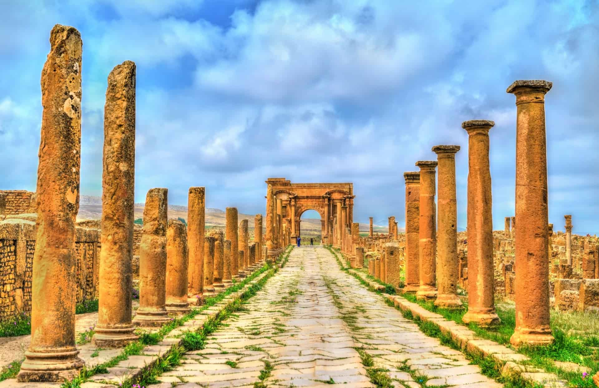

Grâce a ce site, découvrez davantage sur ce pays, notamment son histoire, les endroits formidables que vous pouvez visiter, et bien plus encore!
Informations pertinentes sur l’Algérie:
En plus d’être le plus grand pays d’Afrique en termes de superficie, l’Algérie se distingue par ses vastes ressources naturelles, comprenant des réserves considérables de pétrole, de gaz naturel, et une biodiversité unique s'étendant des montagnes de l’Atlas aux immensités du Sahara.
Ce territoire regorge aussi d’une histoire millénaire, depuis les premières civilisations berbères jusqu’à la période phénicienne, romaine et islamique, en passant par la lutte pour l’indépendance au XXe siècle..Pour plus d'informations, consultez la section "Histoire" dans le menu.

Emir Abd al-Qadir ibn Muhyi al-Din
Timgad(Ruine romaine)